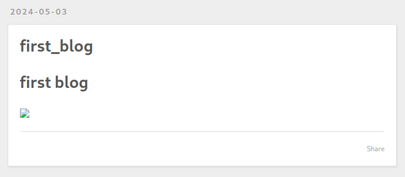
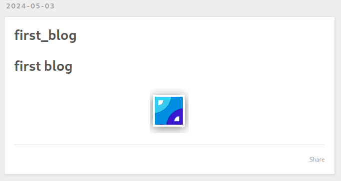

Hexo博客常见问题
Hexo博客常见问题
图片存储方案
在上一章中，我们配置了在创建博客同时创建一个同名文件夹存储图片等文件，但是当我们在博客的Markdown文件中引用图片文件，图片并不能显示出来
官方方案
官方给出了一些解决方案，这里我用一个最简单的方法
在_config.yml配置文件中配置以下内容
1 | post_asset_folder: true |
如果创建了一篇博客"Hello"，则会在source/_posts文件夹中同时创建一个同名的Hello文件夹，将PicGo.png图片文件放置于Hello文件夹中，在"Hello.md"使用Markdown格式引用图片文件即可
1 | --- |
可以看到图片成功显示出来
在博客主页的图片似乎还是不能显示，只有打开具体某篇博客的页面才能显示出来。。。
图床
另一个方案可以使用图床，我在另一篇博客中有教怎么用Github搭建图床
模板
在执行hexo new命令时，Hexo会在对应的目录根据模板文件生成一个新的文件，可以对模板进行自定义
1 | --- |
Hexo的Katex支持
方案一
安装插件hexo-math，通过标签插件支持KaTeX和MathJax
在文章信息部分启用katex和mathjax选项
1 | --- |
然后就可以数学公式就可以用CSS格式进行渲染了，像这样
1 | {% katex %} |
NexT主题方案
用另一个渲染内核代替默认内核
1 | npm un hexo-renderer-marked --save |
修改NexT主题配置
1 | math: |
punycode模块报警告
1 | (node:7616) [DEP0040] DeprecationWarning: The `punycode` module is deprecated. Please use a userland alternative instead. |
安装punycode模块
1 | npm install punycode --save |
在node_modules目录中找到包含require('punycode')的文件，在punycode的后面添加上/
我使用的markdown-it模块中，index.js文件使用了这个模块，修改文件内容
1 | var punycode = require('punycode/'); |
LaTex警告
使用\\或\newline进行\Latex中的换行时，会有以下警告，但是能正常换行
1 | LaTeX-incompatible input and strict mode is set to 'warn': In LaTeX, \\ or \newline does nothing in display mode [newLineInDisplayMode] |
通义千问的解释如下
显示模式与文本模式：LaTeX中有两种基本的数学模式，一种是文本模式（text mode），用于正文中的小公式；另一种是显示模式（display mode），用于独立于正文、通常居中的大块数学公式。在文本模式中，\或\newline可以用来实现换行，但在显示模式下，这些命令不用于控制换行，因为数学公式的布局是由LaTeX自动管理的。
严格模式的影响：如果你的系统或编译器设置了严格的模式（比如，strict选项被设置为warn），它会更加仔细地检查潜在的错误或不当用法，并给出警告而不是直接忽略。这样的警告机制有助于开发者或作者发现并修正可能的排版问题。
解决方法：避免直接在数学模式中使用换行符
使用align环境
对于较为复杂的数学公式，尤其是那些需要对齐的多行公式，可以使用align环境。在Markdown中插入KaTeX公式时，你需要使用\begin{align}…\end{align}环境。每个等式行末尾使用\来换行，并且可以使用&符号来指定对齐点。
例如：
1 | $$ |
请注意，由于Markdown和KaTeX的解析方式，确保你的Markdown编辑器或渲染器支持这种语法。在一些场景下，你可能需要直接嵌入HTML来包裹KaTeX的标签以确保正确解析。
分别显示多个公式
如果不需要对齐，只是简单地想在两个公式之间换行，可以将它们分别放在两个$$…$$块中：
1 | $$ |
这种方法虽然简单，但不会像align那样提供对齐功能。
注意事项
确保你的Markdown处理器或所用的KaTeX插件支持这些高级数学环境的解析。
在实际应用中，根据你的Markdown编辑器或平台的具体配置（如是否支持拓展的数学环境），可能需要进行适当调整。
Reference
DeprecationWarning: The punycode module is deprecated. Please use a userland alternative instead.